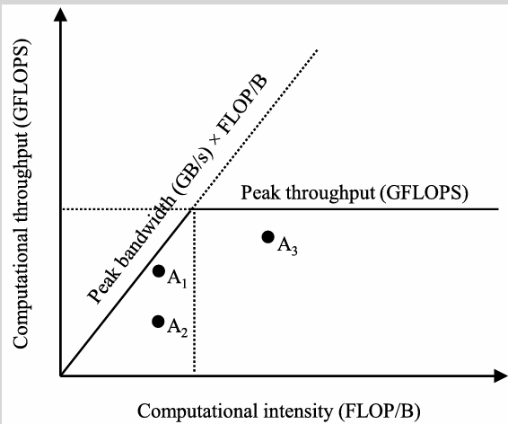
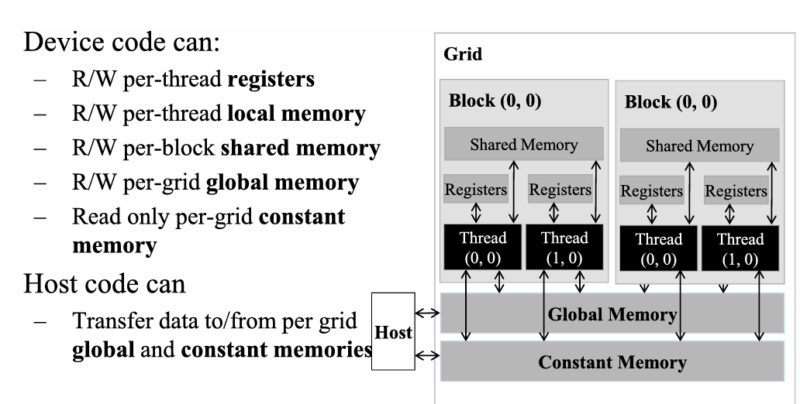
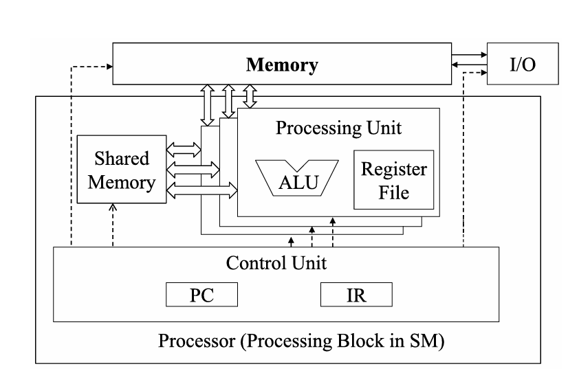
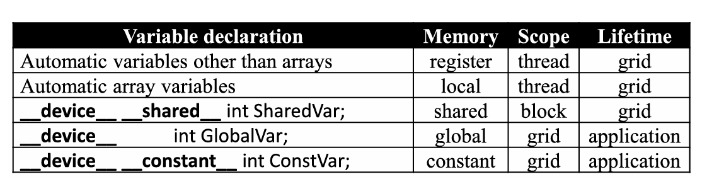
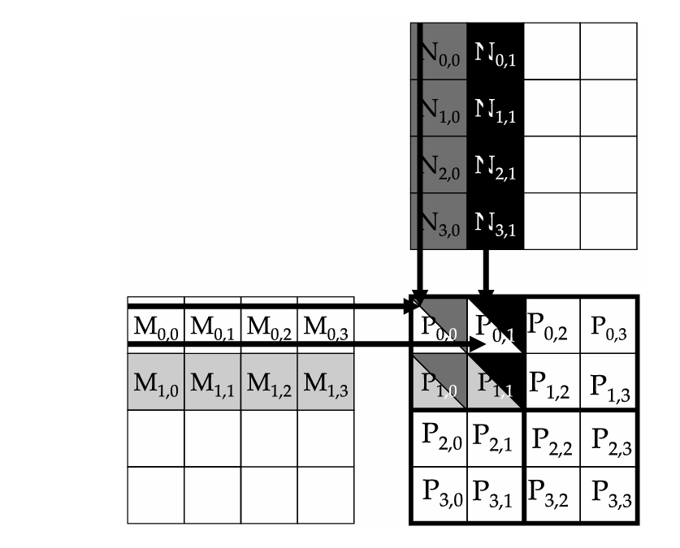
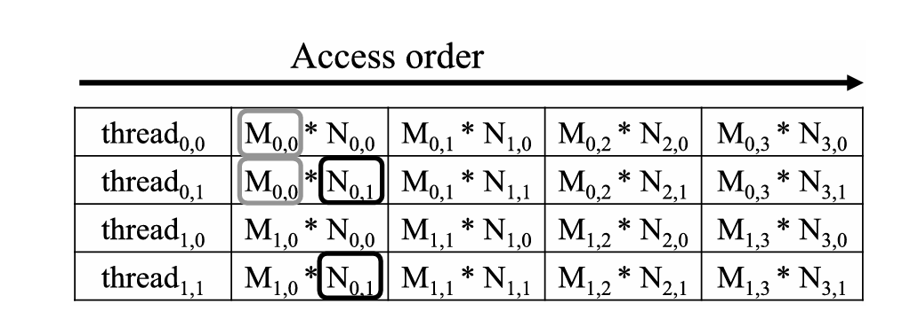
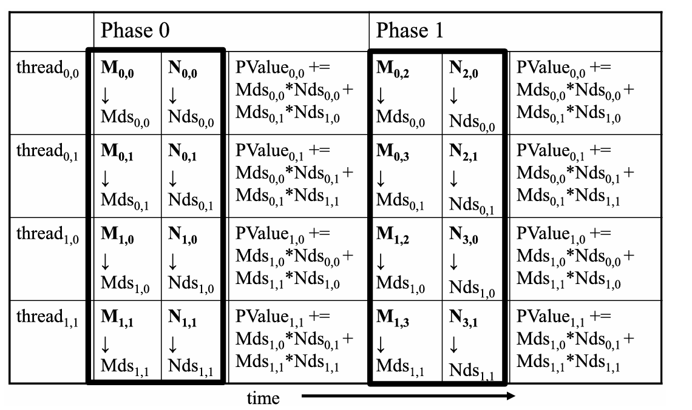

Learning outcomes
Scope
This module shifts from launching work to feeding work with data. It shows how to decide whether a kernel is limited by memory bandwidth, how to quantify useful work per byte moved, and how shared memory, locality, tiling, and boundary checks change a matrix kernel from repeated global-memory traffic into deliberate data reuse.
1. Memory Bandwidth and Data Locality
1.1 Memory bandwidth as a performance limit
Many GPU kernels become memory-bound before they become compute-bound. If each useful arithmetic operation depends on expensive global-memory traffic, performance is capped by how quickly data can be moved rather than by how many arithmetic units are available.
Keep these two hardware limits separate when reasoning about a kernel:
Peak computational throughput
The maximum arithmetic rate of the device for a given datatype, for example FP32. It tells you the best-case rate at which the GPU could execute floating-point operations if the arithmetic units were continuously fed with useful work.
Peak memory bandwidth
The maximum rate at which data can be read from or written to a memory system such as GPU global memory. It tells you the best-case byte traffic rate when the memory system, not the arithmetic units, is the limiting resource.
Both values are upper bounds, not guaranteed application performance.
FLOP
A FLOP is one floating-point operation, such as one FP32 addition or one FP32 multiplication. FLOPS means floating-point operations per second, so 1 TFLOPS means one trillion floating-point operations per second.
| Concept | Definition | Unit | Why it matters |
|---|---|---|---|
| Peak computational throughput | Maximum floating-point work the GPU can perform per second for a chosen datatype. | GFLOPS or TFLOPS | Ceiling for kernels that keep arithmetic units busy. |
| Peak memory bandwidth | Maximum global-memory byte traffic the GPU can sustain per second. | GB/s or TB/s | Ceiling for kernels dominated by loads and stores. |
| Compute-to-global-memory-access ratio | Floating-point operations performed for each byte accessed in global memory. | FLOP/B | First estimate of whether the kernel is memory-bound or compute-bound. |
| Arithmetic intensity / computational intensity | Common names for the same operations-per-byte idea. | FLOP/B | Used in roofline and speed-of-light reasoning. |
The central ratio is:
compute-to-global-memory-access ratio =
floating-point operations / global-memory bytes accessedA low value means that each byte brought from global memory enables little computation. A high value means that the kernel reuses data enough to perform many operations per byte. A useful hardware threshold is obtained by dividing compute peak by memory-bandwidth peak:
machine balance threshold =
peak computational throughput / peak memory bandwidthFor an H100-class FP32 example, using 66.9 TFLOPS of FP32 throughput and 3.35 TB/s of global-memory bandwidth:
66.9 TFLOP/s / 3.35 TB/s = 20.0 FLOP/BA kernel well below 20.0 FLOP/B is expected to be memory-bound on that device. A kernel above that value has enough arithmetic work per byte that compute throughput can become the dominant limit, provided the implementation also has enough parallelism, efficient memory access, and low overhead.

Why the memory-bandwidth line is diagonal
The diagonal line represents this limit:
maximum possible throughput = memory bandwidth x computational intensityThe units explain the idea:
GB/s x FLOP/B = GFLOP/sIn words:
bytes per second x operations per byte = operations per secondThe line is diagonal because if bandwidth stays fixed, but each byte produces more FLOP, then the maximum possible throughput grows proportionally.
For example, suppose:
peak memory bandwidth = 100 GB/sIf a kernel has:
computational intensity = 1 FLOP/Bthen the maximum throughput that memory can sustain is:
100 GB/s x 1 FLOP/B = 100 GFLOP/sIf the kernel reuses data better and reaches:
computational intensity = 5 FLOP/Bthen, with the same bandwidth, it can sustain:
100 GB/s x 5 FLOP/B = 500 GFLOP/sSo the line goes up because, for the same amount of memory traffic, a kernel with more FLOP per byte can do more computation before being limited by memory.
The line stops rising when it meets the horizontal peak computational throughput line. From that point on, even if data reuse increases, the limit is no longer memory bandwidth but the maximum capacity of the arithmetic units.
The table below gives typical peak-performance values and indicative costs for several GPU products. From these values we can derive a typical computational-intensity threshold for each device by dividing FP32 peak throughput by memory bandwidth. For GeForce RTX 50-series rows, scalar FP32 peak is estimated as CUDA cores x boost GHz x 2 FLOP/cycle. Prices are indicative USD figures from public pages; data-center accelerators are often sold inside complete OEM systems or rented in cloud, so real quotes can differ substantially.
| Device | Architecture | FP32 peak used | Memory bandwidth | Balance threshold | Indicative price | Data source |
|---|---|---|---|---|---|---|
| H100 SXM | Hopper | 67 TFLOPS | 3.35 TB/s | 20.0 FLOP/B | ~$35K-$40K purchase for SXM; cloud varies by provider | NVIDIA H100 specifications; Northflank H100 price guide |
| H200 SXM | Hopper | 67 TFLOPS | 4.8 TB/s | 14.0 FLOP/B | ~$30K-$40K purchase; ~$4/hr class cloud offers | NVIDIA H200 specifications; JarvisLabs H200 price guide |
| HGX B200 GPU | Blackwell | 75 TFLOPS | 7.7 TB/s | 9.7 FLOP/B | ~$45K-$50K OEM quote range; cloud roughly ~$3.35-$16.11/hr | Lenovo NVIDIA HGX B200 product guide; Northflank B200 price guide; GetDeploying B200 cloud pricing |
| GeForce RTX 5090 | Blackwell | ~104.9 TFLOPS | 1.792 TB/s | 58.5 FLOP/B | ~$1,999 MSRP; street pricing can be much higher, around ~$4.4K in recent trackers | NVIDIA RTX 5090 specifications; PC Gamer GPU price watch |
| GeForce RTX 5080 | Blackwell | ~56.3 TFLOPS | 0.960 TB/s | 58.7 FLOP/B | ~$999 MSRP; current retail often above MSRP, around ~$1.5K in trackers | NVIDIA RTX 5080 specifications; BestValueGPU RTX 5080 price tracker |
| GeForce RTX 5060 Ti 16 GB, local system | Blackwell | ~23.7 TFLOPS | 0.448 TB/s | 52.9 FLOP/B | ~$429 launch/MSRP class; observed retail often ~$500-$740 depending on model and region | NVIDIA GeForce comparison table; Engadget RTX 5060 Ti price note; PassMark RTX 5060 Ti price snapshot; local nvidia-smi reports RTX 5060 Ti, CC 12.0, 16311 MiB |
How to read the threshold column
The threshold is not the computational intensity of the GPU. It is the computational intensity that a kernel must reach before the GPU can stop being clearly limited by memory bandwidth.
Assume a kernel has 30 FLOP/B.
On H100:
30 > 20The kernel is past the roofline knee, so it can become compute-bound.
On RTX 5060 Ti:
30 < 53The same kernel remains memory-bound.
For that kernel, H100 is better balanced because it has enough memory bandwidth relative to its FP32 compute peak. RTX 5060 Ti has a higher threshold because it has a lot of theoretical FP32 compute compared with its memory bandwidth. To use all that compute, the kernel must reuse data heavily. If it does not, the GPU waits for memory.
1.2 Calculation examples for memory-bound or compute-bound kernels
Example 1: vector addition. Consider the elementwise kernel:
C[i] = A[i] + B[i];For one output element, the thread performs one FP32 addition. That is 1 FLOP. The same thread accesses three FP32 values in global memory: it loads A[i], loads B[i], and stores C[i]. An FP32 value is 4 bytes, so the global-memory traffic per element is:
load A[i] = 4 B
+ load B[i] = 4 B
+ store C[i] = 4 B
-----------------
total = 12 BThe compute-to-global-memory-access ratio is therefore:
1 FLOP / 12 B = 0.083 FLOP/BOn the H100-class threshold above, 0.083 FLOP/B is far below 20.0 FLOP/B. Vector addition is therefore deep in the memory-bound region: it does almost no arithmetic for each byte moved. The performance question is not "how many FP32 units does the GPU have?" but "how fast can global memory deliver the two input vectors and accept the output vector?"
Now scale the same kernel to one billion FP32 elements. Each vector contains 1,000,000,000 values, so each vector is approximately 4 GB. The kernel reads two vectors and writes one vector:
4 GB for A
+ 4 GB for B
+ 4 GB for C
------------
12 GB total trafficIf the measured kernel time is 4 ms, the effective global-memory bandwidth is:
12 GB / 0.004 s = 3000 GB/s = 3.0 TB/sCompared with a 3.35 TB/s H100-class peak, that is:
3.0 TB/s / 3.35 TB/s = 0.90 = 90%This is a strong result for a memory-bound kernel. It does not mean the kernel uses 90% of peak FP32 compute. It means the kernel is close to the relevant memory limit. The bandwidth-only lower bound for the same traffic is:
12 GB / 3.35 TB/s = 0.0036 s = 3.6 msSo a measured 4 ms runtime leaves only limited room for low-level tuning unless the program changes the amount of global-memory traffic.
Example 2: naive matrix multiplication. Matrix multiplication looks very different at the mathematical level. Multiplying two N x N FP32 matrices produces N^2 output elements. Each output element is a dot product of length N, which performs N multiplies and roughly N adds. That is about 2N FLOP per output element, so the full operation performs:
N^2 output elements x 2N FLOP per output = 2N^3 FLOPIf an ideal implementation loaded each input matrix element once and stored each output element once, the global-memory traffic would be:
M input: N^2 elements x 4 B = 4N^2 B
+ N input: N^2 elements x 4 B = 4N^2 B
+ P output: N^2 elements x 4 B = 4N^2 B
----------------------------------------
total = 12N^2 BThe ideal compute-to-global-memory-access ratio would be:
2N^3 FLOP / 12N^2 B = N/6 FLOP/B = 0.167N FLOP/BFor N = 1024, this is approximately:
1024 / 6 = 170.7 FLOP/BThat value is far above the H100-class 20.0 FLOP/B threshold. Matrix multiplication therefore has the potential to be compute-bound because each input value can, in principle, contribute to many arithmetic operations.
A naive CUDA kernel often fails to realize that potential. It computes each output element independently with an inner loop like this:
for (int k = 0; k < Width; ++k) {
Pvalue += M[row * Width + k] * N[k * Width + col];
}In one loop iteration, the thread loads one M value and one N value from global memory. That is 8 B of input traffic. It then performs one multiply and one add, or 2 FLOP. Ignoring the final store for a moment, the naive kernel's inner loop has:
2 FLOP / 8 B = 0.25 FLOP/BThe final store to P makes the real ratio slightly lower, but 0.25 FLOP/B is already enough to expose the problem. The mathematical operation is rich in reuse, but this implementation reloads the same matrix elements from global memory many times instead of staging and reusing them.
On the H100-class device, a memory-bound kernel with 0.25 FLOP/B can be supported by global memory at roughly:
3.35 TB/s x 0.25 FLOP/B = 0.8375 TFLOP/sCompared with a 66.9 TFLOPS FP32 peak, that is only:
0.8375 TFLOP/s / 66.9 TFLOP/s = 0.0125 = 1.25%This explains why naive matrix multiplication can be slow even though matrix multiplication is theoretically compute-rich. The bottleneck is not the formula; it is the global-memory access pattern. Tiling fixes this by having threads in a block cooperatively load a small tile into shared memory, synchronize, and reuse the tile values many times before loading the next tile.
1.3 CUDA memory hierarchy
CUDA exposes several memory spaces because not all data has the same visibility, lifetime, latency, bandwidth, or sharing pattern. Choosing a memory space is therefore part of kernel design: it determines which threads can see a value, how long the value exists, and whether an access consumes expensive global-memory bandwidth.
The device can read and write per-thread registers, per-thread local memory, per-block shared memory, and per-grid global memory. It can also read constant memory efficiently when the access pattern matches the constant-memory path. The host can transfer data to and from device global memory and can initialize constant memory before kernels use it.

| Memory space | Typical scope | Access from device | Main use | Performance note |
|---|---|---|---|---|
| Registers | One thread | Read/write | Private scalar variables used frequently by a thread. | Fastest path, but high register use can reduce occupancy. |
| Local memory | One thread | Read/write | Private data that cannot fit naturally in registers, such as spills or some automatic arrays. | Despite the name, it is backed by device memory and can have global-memory-like latency. |
| Shared memory | One thread block | Read/write | Cooperation and data reuse among threads in the same block. | On-chip and much faster than global memory, but capacity is limited per SM/block. |
| Global memory | Device-wide grids | Read/write | Large arrays, input/output buffers, and data shared across kernel launches. | Large capacity, high bandwidth in aggregate, but long latency and expensive traffic. |
| Constant memory | Application/device-wide symbol | Read-only from kernels | Values initialized by the host and read by many threads. | Cached and efficient for suitable read patterns, but small and not writable by kernels. |
| Texture/read-only paths | Device-visible read path | Usually read-only | Specialized read patterns, especially spatial locality and cached lookup behavior. | Useful for some access patterns, but not the main mechanism used in this module's tiling example. |
1.4 Global, shared, local, constant, and texture memory
Registers are the preferred home for private scalar values such as loop counters, partial sums, and temporary variables. A register operand can feed an arithmetic instruction directly, while a value in global memory must first be loaded. This is why keeping a repeatedly used private value in a register increases the amount of useful work done per global-memory byte.
Local memory is private to one thread, but it is not the same as registers. It is used when the compiler cannot keep private data in registers, for example because of register spilling, stack use, or some automatic arrays. Local memory can therefore be much slower than the name suggests, because the storage is backed by device memory.
Shared memory is allocated per thread block. All threads in the same block can access the same shared-memory allocation, which makes it the main CUDA mechanism for explicit cooperation. It is on-chip and much faster than global memory, but it is also limited: using more shared memory per block may reduce the number of resident blocks and warps on an SM.

Efficient data access
Efficient access means arranging data layout and thread mapping so memory transactions move useful data for many threads at once. Poor access patterns waste bandwidth, add latency, and can make a mathematically parallel kernel run far below the GPU's expected throughput.
Locality and traffic reduction
Data locality means using the same or nearby data close together in time. The optimization goal is to perform more useful work for each byte fetched from expensive memory by reusing values from registers, shared memory, caches, constant memory, or specialized read-only paths.
Global memory is the large device memory used for arrays, input buffers, output buffers, and data that must survive across kernel launches. It is visible to all threads, and the host can copy data to and from it. Its capacity is large, but each access is expensive compared with registers or shared memory, so performance-sensitive kernels try to reduce redundant global-memory traffic.
Constant memory stores values written by the host and read by kernels. Kernels cannot modify those values. It is useful for small read-only data that many threads use, and its cached path can be very efficient when threads read the same or nearby constant values. Texture memory and modern read-only cache paths serve specialized read patterns; they are important in some image and lookup workloads, but the first optimization pattern in this module uses shared memory because matrix multiplication has obvious block-local reuse.
CUDA declarations express both placement and visibility. Ordinary automatic scalar variables inside a kernel normally become per-thread register values. Automatic arrays may become local memory when the compiler cannot keep them in registers. A variable declared with __shared__ is a per-block shared-memory object. A variable declared with __constant__ is a device constant symbol initialized from host code and read by kernels. A file-scope __device__ variable resides in global memory and is visible to device code across kernels.
Automatic variables
An automatic variable is a local variable declared inside a function without a special storage qualifier. For example:
__global__ void kernel(float* A, float* B, float* C) {
int i = blockIdx.x * blockDim.x + threadIdx.x;
float value = A[i] + B[i];
C[i] = value;
}Here, int i and float value are automatic variables. In a CUDA kernel, every thread gets its own private copy. The variable exists only while that thread executes the function. Simple scalar automatic variables normally live in registers; local arrays or spilled values may be placed in local memory, which is private to the thread but much slower because it is backed by device memory.

The practical rule is to ask three questions for every value: who needs to see it, how long must it live, and how many times will it be reused? Private short-lived values belong in registers when possible. Block-shared reusable values are candidates for shared memory. Large arrays and host-visible buffers live in global memory. Small read-only values that many threads reuse may belong in constant memory or a specialized read-only path.
1.5 CPU vs. GPU register architecture
CPU and GPU register files are designed for different scheduling goals. A CPU is optimized for strong single-thread performance and relatively small numbers of active hardware threads. When the operating system switches from one CPU software thread to another, the outgoing thread's register state may need to be saved to memory and the incoming thread's register state restored before execution continues.
A GPU SM is optimized for many resident warps. Instead of saving and restoring registers on every warp switch, the SM keeps the register state of resident threads in its register file. When one warp stalls, for example on a long-latency memory operation, the warp scheduler can select another ready warp whose registers are already present on the SM. This is the hardware basis for low-overhead warp scheduling and latency hiding.
This design requires much larger aggregate register files than a conventional CPU core. It also explains why registers are an occupancy resource. The SM has a fixed register budget; if each thread uses only a few registers, more threads and warps can reside on the SM. If each thread uses many registers, fewer warps can be resident, and the scheduler has a smaller pool of ready work to hide latency.
The practical CUDA lesson is that registers are extremely fast, but not free. Keeping a private value in a register can remove global-memory traffic and improve arithmetic intensity. Using too many registers per thread can reduce occupancy, and if register pressure becomes too high the compiler may spill values into local memory, which is much slower.
1.6 The tiling technique
Tiling is the practice of partitioning a large data structure into smaller regions that fit into a faster memory. In CUDA, the usual goal is to move a small subset of global-memory data into shared memory, reuse it many times inside one thread block, and therefore reduce repeated global-memory traffic.
The reason this helps is the basic CUDA memory trade-off: global memory is large and visible across the whole device, but each access is expensive; shared memory is small and block-local, but it is on chip and much faster. A tile is useful only when the computation on that subset has enough independence and enough reuse. If threads load a tile once and use it only once, the extra shared-memory code and synchronizations may not pay off.

M and one column of N. The highlighted output tile shows the work assigned to one thread block in the running example.Matrix multiplication is the standard first example because the reuse is visible. Threads that compute neighboring output elements need overlapping input data. For example, two threads computing adjacent columns of the same output row read the same row of M. Two threads computing adjacent rows of the same output column read the same column of N. A naive kernel lets each thread reload those values independently from global memory.

M or N. This overlap is the opportunity exploited by tiling: load each reused value once into shared memory, then let multiple threads consume it from there.Traffic reduction idea
With a TILE_WIDTH x TILE_WIDTH output tile, the potential reduction in global-memory traffic is proportional to TILE_WIDTH. In the small 2 x 2 example, values loaded by a block are reused twice. With 32 x 32 tiles, the same idea can reduce redundant global-memory loads by a factor close to 32, assuming the access pattern and shared-memory capacity support the tile.
The tiling workflow is therefore: choose a tile size that fits in shared memory, assign one thread block to one output tile, have the threads cooperatively load the required input tiles, synchronize the block, compute using shared memory, and repeat for the next phase of the dot product.
1.7 Practical example: matrix multiplication with tiling
For square matrix multiplication, a block can compute a square output tile of P. If TILE_WIDTH is the tile dimension, the block has TILE_WIDTH x TILE_WIDTH threads and each thread computes one output element P[Row, Col]. The thread keeps its partial sum in a private automatic variable, usually named Pvalue.

M and N to use shared memory. In each phase, the block loads one tile of M and one tile of N into shared arrays such as Mds and Nds. Threads then reuse those shared-memory values while accumulating their output elements.The calculation is divided into phases. In phase ph, every thread cooperatively loads one element of the current M tile and one element of the current N tile:
Mds[ty][tx] = M[Row * Width + ph * TILE_WIDTH + tx];
Nds[ty][tx] = N[(ph * TILE_WIDTH + ty) * Width + Col];After these loads, the block must execute __syncthreads(). This first barrier is a read-after-write requirement: no thread may read from Mds or Nds until all peer threads have finished writing the tile.
Once the tile is ready, each thread performs one phase of the dot product using shared memory:
for (int k = 0; k < TILE_WIDTH; ++k) {
Pvalue += Mds[ty][k] * Nds[k][tx];
}The same Mds and Nds arrays are reused in every phase. This is the key locality pattern: a small shared-memory allocation serves many accesses that would otherwise go to global memory. After the inner loop, a second __syncthreads() is required before the next phase overwrites the shared arrays. This second barrier is a write-after-read requirement: no thread may replace a tile until all threads have finished reading it.
If Width is the matrix dimension, the number of phases is:
Width / TILE_WIDTHSo a 1024 x 1024 matrix with TILE_WIDTH = 32 uses 32 phases. Each phase focuses the block on a small subset of the input matrices, creating locality and reducing global-memory traffic. The runnable teaching implementation is available in examples/ch04/tiled_matrix_mul_square.
Why the teaching example assumes clean dimensions
The first tiled implementation assumes that Width is divisible by TILE_WIDTH. That keeps the code focused on shared-memory tiling, phase structure, and synchronization. Real kernels must also handle edge tiles with boundary checks, but those checks are deliberately kept out of the first explanation.
1.8 Impact of memory usage on occupancy
Using more shared memory or causing more register pressure can reduce the number of resident blocks or warps per SM. Memory optimization therefore changes not only traffic but also occupancy and scheduling flexibility.
Register-occupancy trade-off
Registers are a fixed physical resource inside each SM. Every CUDA thread has private registers, so when a block becomes resident on an SM, the hardware must reserve the registers required by all threads in that block:
registers_per_block =
registers_per_thread x threads_per_blockIf a kernel uses many registers per thread, each block consumes a larger fraction of the SM register file. Fewer blocks and fewer warps can therefore be resident at the same time, which lowers occupancy and gives the scheduler fewer ready warps to use while other warps wait on memory or instruction dependencies.
For example, assume an SM has 65,536 registers and the kernel launches 256 threads per block. With 32 registers per thread, one block needs 32 x 256 = 8,192 registers, so the register budget can support up to 8 such blocks. With 64 registers per thread, one block needs 64 x 256 = 16,384 registers, so the same budget supports only 4 blocks.
The trade-off is that more registers can make each thread faster by keeping private values close to the arithmetic units and avoiding extra memory traffic. But too many registers reduce occupancy, and excessive register pressure can force the compiler to spill values into local memory, which is private to the thread but backed by much slower device memory.
2. Guided Exercises
2.1 Locality exercise
- Take a naive kernel and identify which global-memory accesses are reused.
- State which data could benefit from shared-memory staging.
2.2 Tiling exercise
- Open and compile the runnable square-matrix example
examples/ch04/tiled_matrix_mul_square. - Run it with
Widthvalues that are multiples ofTILE_WIDTH, such as512and1024. - Record CPU triple-loop time, GPU kernel time, GPU throughput, and GPU speedup over CPU.
- Explain why this teaching version does not need boundary checks and what would break if
Widthwere not divisible byTILE_WIDTH. - Use the code to identify where global memory is accessed, where shared memory is reused, and where synchronization is required.
2.3 Matrix multiplication implementation comparison
Use the two runnable implementations as a small benchmark study: the readable tiled kernel in examples/ch04/tiled_matrix_mul_square and the library comparison in examples/ch04/cublas_matrix_mul_compare.
- First run the teaching kernel with
./tiled_matrix_mul_square 1024 20and record CPU time, GPU kernel time, GPU throughput, and speedup over CPU. - Then run
./cublas_matrix_mul_compare 1024 20 defaultand record CPU triple-loop time, tiled-kernel time,cuBLAS SGEMMtime, tiled throughput, cuBLAS throughput, and cuBLAS speedup over the tiled kernel. - Repeat the cuBLAS comparison with
./cublas_matrix_mul_compare 1024 20 pedanticand note whether the math mode changes throughput or numerical error. - Write a short conclusion explaining the performance ladder: CPU triple loop is the baseline, the tiled CUDA kernel gains from parallelism and shared-memory reuse, and cuBLAS gains further from production-grade tiling, architecture-specific kernels, scheduling, memory-layout tuning, and optimized math paths.
- State clearly that the tiled kernel is the right teaching artifact for understanding locality, while cuBLAS is the right production choice for dense matrix multiplication unless the application needs a custom operation.
2.4 Register and occupancy exercise
- Open and compile the register-pressure example
examples/ch04/register_occupancy_tradeoff. - Run one configuration with
./register_occupancy_tradeoff 1048576 256 32 32 5 0, then repeat with higher register-pressure levels. - Run the sweep mode and identify where increasing registers per thread reduces blocks per SM, warps per SM, or theoretical occupancy.
- Use Nsight Compute on one configuration and compare reported occupancy with the program's CUDA Occupancy API estimate.